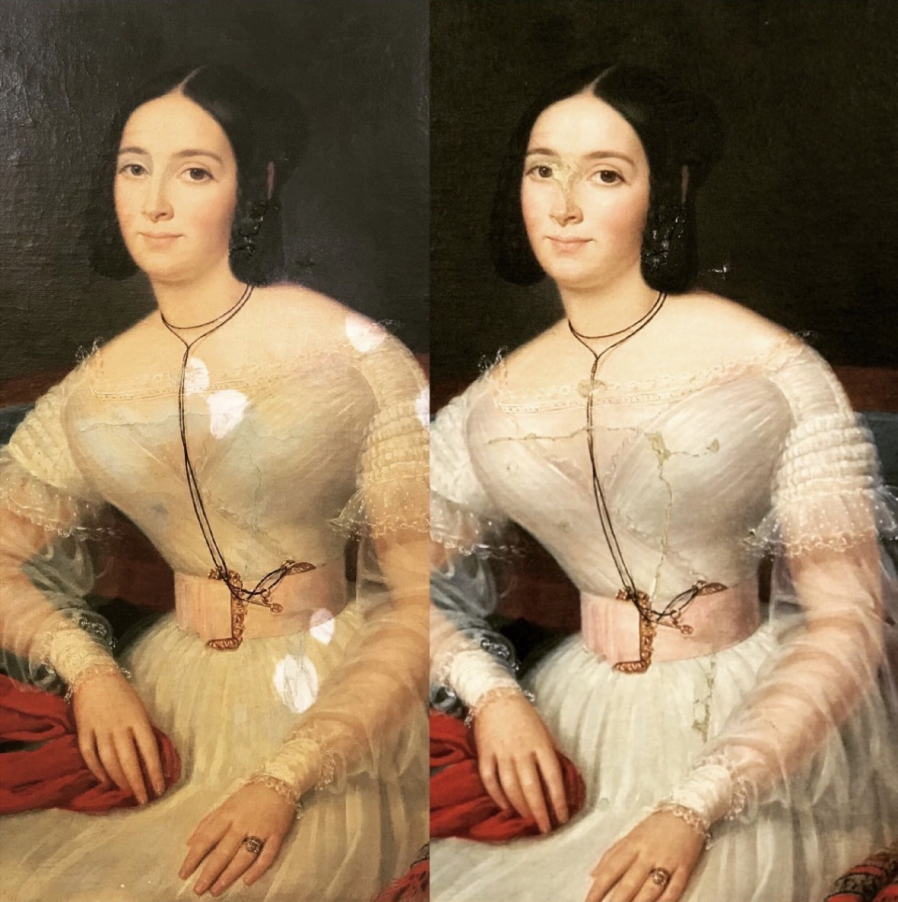
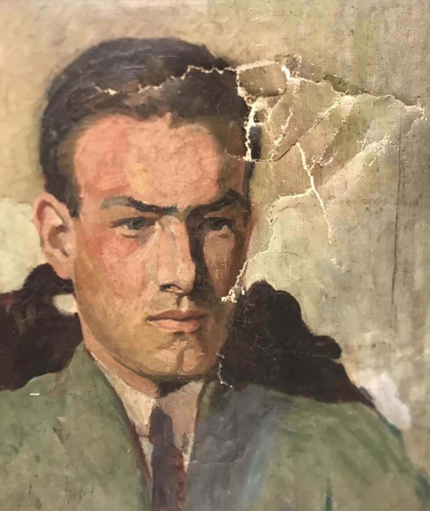
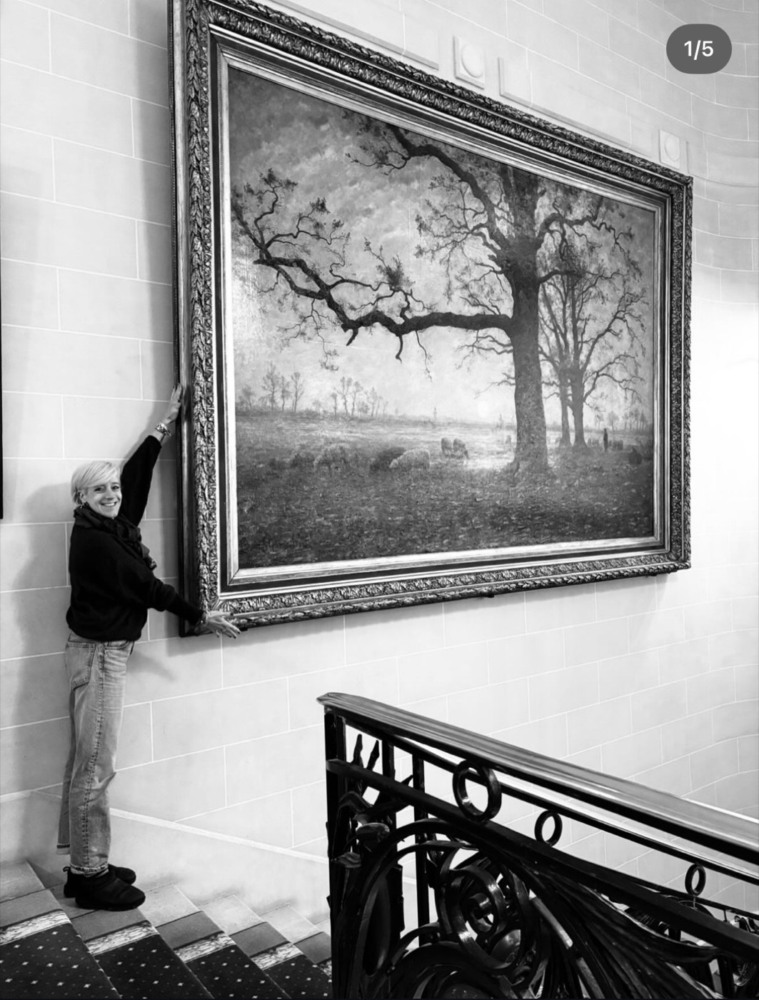
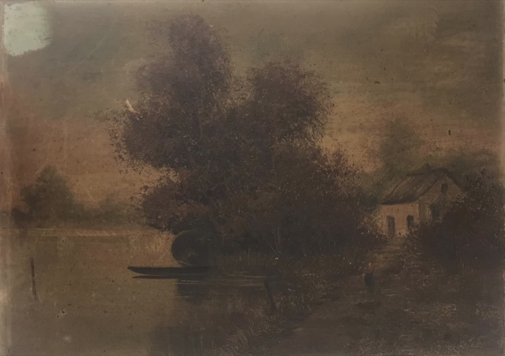
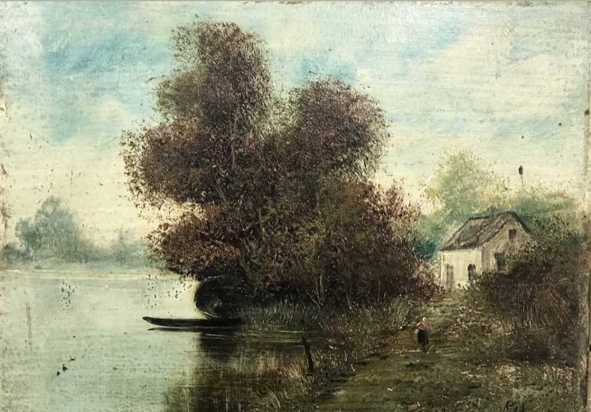
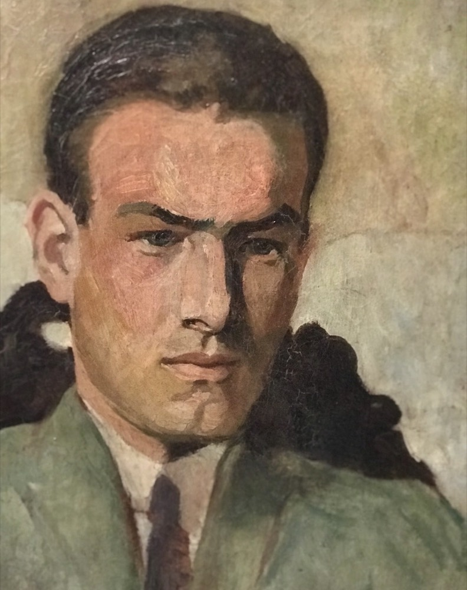

Restauration & conservation de tableaux
Marion Sauvage, restauratrice de tableaux à Vichy depuis 2003. Technique sur toile, bois et cuivre.

22 ans de métier, au service des œuvres
Licenciée en Histoire de l'Art et diplômée de l'Atelier de la Renaissance, Marion Sauvage restaure des tableaux à Vichy depuis 2003. Elle intervient pour des particuliers, des antiquaires et des municipalités.
- 2003Restauratrice de tableaux à Vichy
- —Licenciée en Histoire de l'Art
- —Diplômée de l'Atelier de la Renaissance
- 2008Prix Lamoureux
- —Technique sur toile, bois et cuivre
Conservation et restauration : deux gestes complémentaires
Conserver l'œuvre dans le temps
Refixage et rentoilage : des interventions destinées à stabiliser la toile et la couche picturale, pour que l'œuvre traverse le temps dans les meilleures conditions.
Redonner une lisibilité à l'œuvre
Allégement des vernis et des crasses, mastic, retouche, vernis final : autant d'étapes pour retrouver les couleurs et la profondeur d'origine du tableau.
Réversibilité Stabilité Lisibilité
Chaque intervention est menée dans le respect de l'œuvre, avec patience — sans jamais compromettre la possibilité d'une restauration future.
Un aperçu du travail de restauration





Particuliers, antiquaires et municipalités
Marion Sauvage intervient aussi bien sur des tableaux de famille que sur des œuvres de collections publiques, comme lors de cette restauration pour la Ville de Vichy.